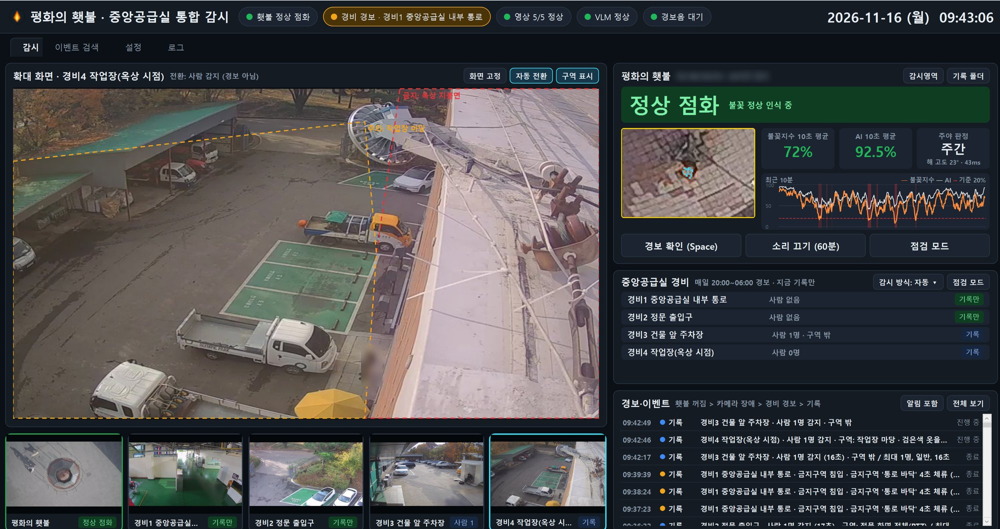

안전
출입감시 시스템
중앙공급실 4개 경비 구역(내부 통로, 정문 출입구, 건물 앞 주차장, 작업장 옥상 시점)을 CCTV로 감시하고, AI가 사람을 감지하면 구역과 체류 시간을 자동 판별·기록하는 출입감시 시스템을 구축했습니다.


- 4개 구역별 실시간 사람 감지
- 중앙공급실 주요 동선 4곳의 카메라마다 AI가 사람을 실시간으로 감지해 구역별 인원수와 경비 상태를 표시합니다.
- 금지구역·주의구역 다각형 설정
- 카메라 화면 위에 옥상 지붕면 등 금지구역과 작업장 마당 등 주의구역을 다각형으로 직접 설정해, 금지구역 침입 및 일정 시간 이상 체류 시 경보를 발생시킵니다.
- 시간대별 감시 방식 자동 전환
- 야간(20:00~06:00)에는 침입 시 즉시 경보를 울리고, 작업자가 오가는 주간에는 이벤트 기록만 남기도록 시간대에 따라 감시 모드를 자동 전환합니다.
- 이벤트 기록과 검색
- 감지 시각, 구역, 인원, 체류 시간과 상황 요약을 이벤트 로그로 저장해 이벤트 검색 탭에서 사후 추적·확인할 수 있습니다.
- 횃불 감시와 통합 운영
- 평화의 광장 횃불 감시와 하나의 통합 감시 프로그램에서 함께 운영해, 담당자가 한 화면으로 두 업무를 동시에 관제합니다.